5 Geometry operations
#> Linking to GEOS 3.8.0, GDAL 3.0.4, PROJ 6.3.1
#> terra version 1.5.0Some of the exercises use a vector (zion_points) and raster dataset (srtm) from the spDataLarge package.
They also use a polygonal ‘convex hull’ derived from the vector dataset (ch) to represent the area of interest:
library(sf)
library(terra)
library(spData)
zion_points = read_sf(system.file("vector/zion_points.gpkg", package = "spDataLarge"))
srtm = rast(system.file("raster/srtm.tif", package = "spDataLarge"))
ch = st_combine(zion_points) %>%
st_convex_hull() %>%
st_as_sf()E1. Generate and plot simplified versions of the nz dataset.
Experiment with different values of keep (ranging from 0.5 to 0.00005) for ms_simplify() and dTolerance (from 100 to 100,000) st_simplify().
- At what value does the form of the result start to break down for each method, making New Zealand unrecognizable?
- Advanced: What is different about the geometry type of the results from
st_simplify()compared with the geometry type ofms_simplify()? What problems does this create and how can this be resolved?
plot(rmapshaper::ms_simplify(st_geometry(nz), keep = 0.5))
plot(rmapshaper::ms_simplify(st_geometry(nz), keep = 0.05))
# Starts to breakdown here at 0.5% of the points:
plot(rmapshaper::ms_simplify(st_geometry(nz), keep = 0.005))
# At this point no further simplification changes the result
plot(rmapshaper::ms_simplify(st_geometry(nz), keep = 0.0005))
plot(rmapshaper::ms_simplify(st_geometry(nz), keep = 0.00005))
plot(st_simplify(st_geometry(nz), dTolerance = 100))
plot(st_simplify(st_geometry(nz), dTolerance = 1000))
# Starts to breakdown at 10 km:
plot(st_simplify(st_geometry(nz), dTolerance = 10000))
plot(st_simplify(st_geometry(nz), dTolerance = 100000))
plot(st_simplify(st_geometry(nz), dTolerance = 100000, preserveTopology = TRUE))
# Problem: st_simplify returns POLYGON and MULTIPOLYGON results, affecting plotting
# Cast into a single geometry type to resolve this
nz_simple_poly = st_simplify(st_geometry(nz), dTolerance = 10000) %>%
st_sfc() %>%
st_cast("POLYGON")
nz_simple_multipoly = st_simplify(st_geometry(nz), dTolerance = 10000) %>%
st_sfc() %>%
st_cast("MULTIPOLYGON")
plot(nz_simple_poly)
length(nz_simple_poly)
nrow(nz)E2. In the first exercise in Chapter Spatial data operations it was established that Canterbury region had 70 of the 101 highest points in New Zealand.
Using st_buffer(), how many points in nz_height are within 100 km of Canterbury?
canterbury = nz[nz$Name == "Canterbury", ]
cant_buff = st_buffer(canterbury, 100)
nz_height_near_cant = nz_height[cant_buff, ]
nrow(nz_height_near_cant) # 75 - 5 moreE3. Find the geographic centroid of New Zealand. How far is it from the geographic centroid of Canterbury?
cant_cent = st_centroid(canterbury)
nz_centre = st_centroid(st_union(nz))
st_distance(cant_cent, nz_centre) # 234 kmE4. Most world maps have a north-up orientation.
A world map with a south-up orientation could be created by a reflection (one of the affine transformations not mentioned in this chapter) of the world object’s geometry.
Write code to do so.
Hint: you need to use a two-element vector for this transformation.
Bonus: create an upside-down map of your country.
world_sfc = st_geometry(world)
world_sfc_mirror = world_sfc * c(1, -1)
plot(world_sfc)
plot(world_sfc_mirror)
us_states_sfc = st_geometry(us_states)
us_states_sfc_mirror = us_states_sfc * c(1, -1)
plot(us_states_sfc)
plot(us_states_sfc_mirror)
## nicer plot
library(ggrepel)
us_states_sfc_mirror_labels = st_centroid(us_states_sfc_mirror) %>%
st_coordinates() %>%
as_data_frame() %>%
mutate(name = us_states$NAME)
us_states_sfc_mirror_sf = st_set_geometry(us_states, us_states_sfc_mirror)
ggplot(data = us_states_sfc_mirror_sf) +
geom_sf(color = "white") +
geom_text_repel(data = us_states_sfc_mirror_labels, mapping = aes(X, Y, label = name), size = 3, min.segment.length = 0) +
theme_void() E5. Subset the point in p that is contained within x and y.
- Using base subsetting operators.
- Using an intermediary object created with
st_intersection().
p_in_y = p[y]
p_in_xy = p_in_y[x]
x_and_y = st_intersection(x, y)
p[x_and_y]E6. Calculate the length of the boundary lines of US states in meters.
Which state has the longest border and which has the shortest?
Hint: The st_length function computes the length of a LINESTRING or MULTILINESTRING geometry.
us_states2163 = st_transform(us_states, "EPSG:2163")
us_states_bor = st_cast(us_states2163, "MULTILINESTRING")
us_states_bor$borders = st_length(us_states_bor)
arrange(us_states_bor, borders)
arrange(us_states_bor, -borders)E7. Crop the srtm raster using (1) the zion_points dataset and (2) the ch dataset.
Are there any differences in the output maps?
Next, mask srtm using these two datasets.
Can you see any difference now?
How can you explain that?
plot(srtm)
plot(st_geometry(zion_points), add = TRUE)
plot(ch, add = TRUE)
srtm_crop1 = crop(srtm, vect(zion_points))
srtm_crop2 = crop(srtm, vect(ch))
plot(srtm_crop1)
plot(srtm_crop2)
srtm_mask1 = mask(srtm, vect(zion_points))
srtm_mask2 = mask(srtm, vect(ch))
plot(srtm_mask1)
plot(srtm_mask2)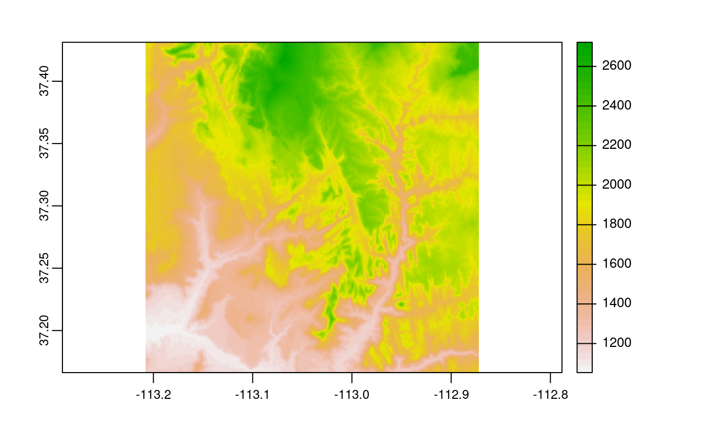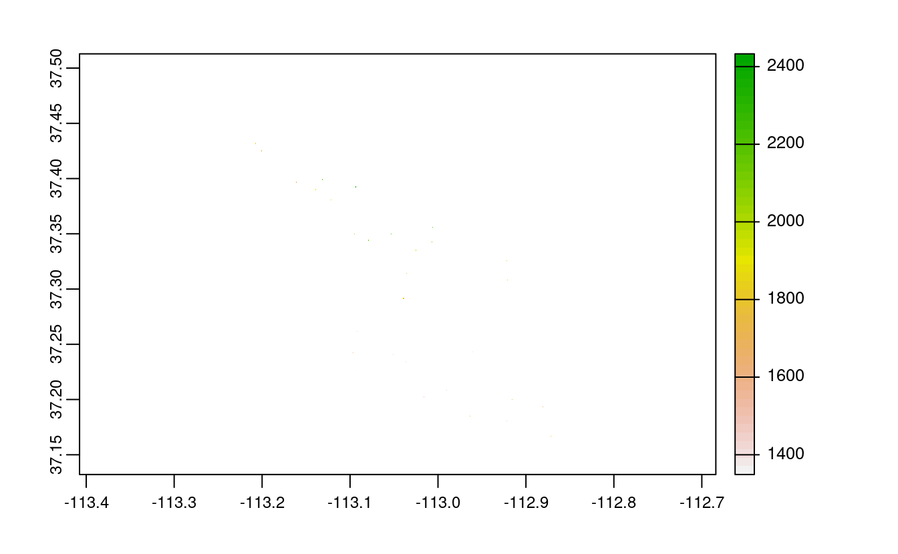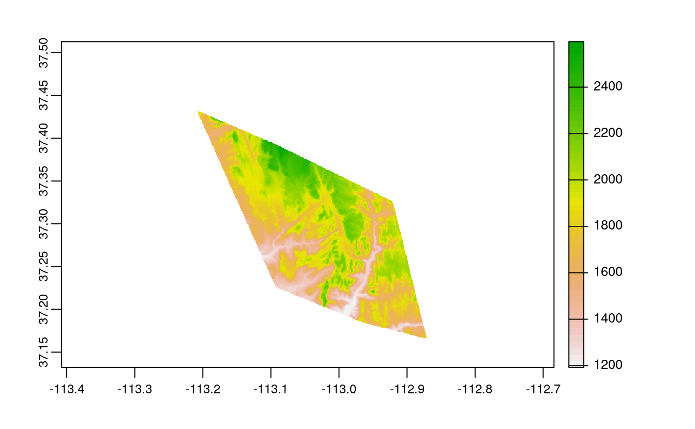
E8. Firstly, extract values from srtm at the points represented in zion_points.
Next, extract average values of srtm using a 90 buffer around each point from zion_points and compare these two sets of values.
When would extracting values by buffers be more suitable than by points alone?
zion_points_buf = st_buffer(zion_points, dist = 90)
plot(srtm)
plot(st_geometry(zion_points_buf), add = TRUE)
plot(ch, add = TRUE)
zion_points_points = extract(srtm, vect(zion_points))
zion_points_buf = extract(srtm, vect(zion_points_buf))
plot(zion_points_points$srtm, zion_points_buf$srtm2)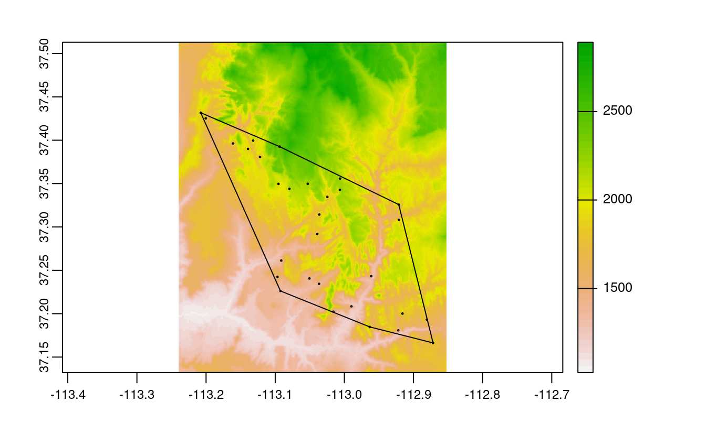
E9. Subset points higher than 3100 meters in New Zealand (the nz_height object) and create a template raster with a resolution of 3 km for the extent of the new point dataset.
Using these two new objects:
- Count numbers of the highest points in each grid cell.
- Find the maximum elevation in each grid cell.
nz_height3100 = dplyr::filter(nz_height, elevation > 3100)
new_graticule = st_graticule(nz_height3100, datum = "EPSG:2193")
plot(st_geometry(nz_height3100), graticule = new_graticule, axes = TRUE)
nz_template = rast(ext(nz_height3100), resolution = 3000, crs = crs(nz_height3100))
nz_raster = rasterize(vect(nz_height3100), nz_template,
field = "elevation", fun = "length")
plot(nz_raster)
plot(st_geometry(nz_height3100), add = TRUE)
nz_raster2 = rasterize(vect(nz_height3100), nz_template,
field = "elevation", fun = max)
plot(nz_raster2)
plot(st_geometry(nz_height3100), add = TRUE) 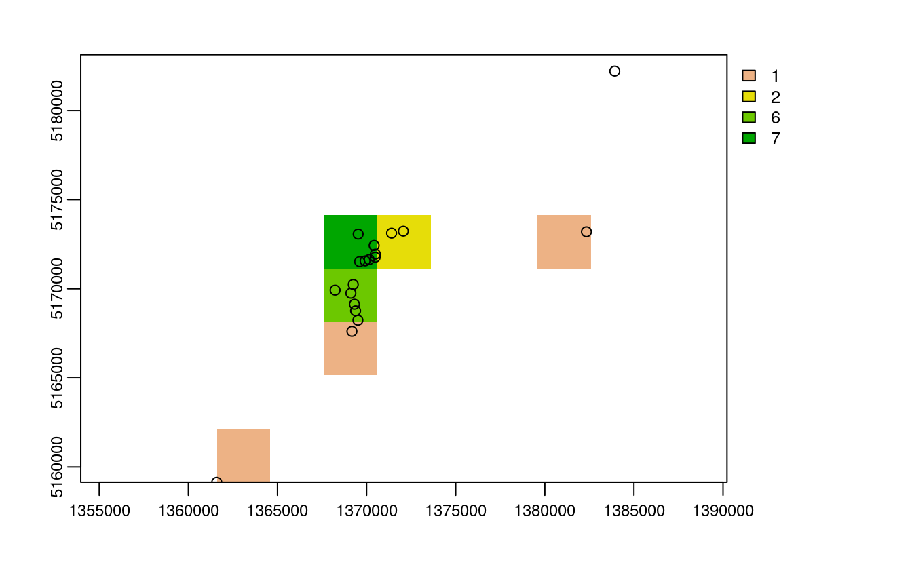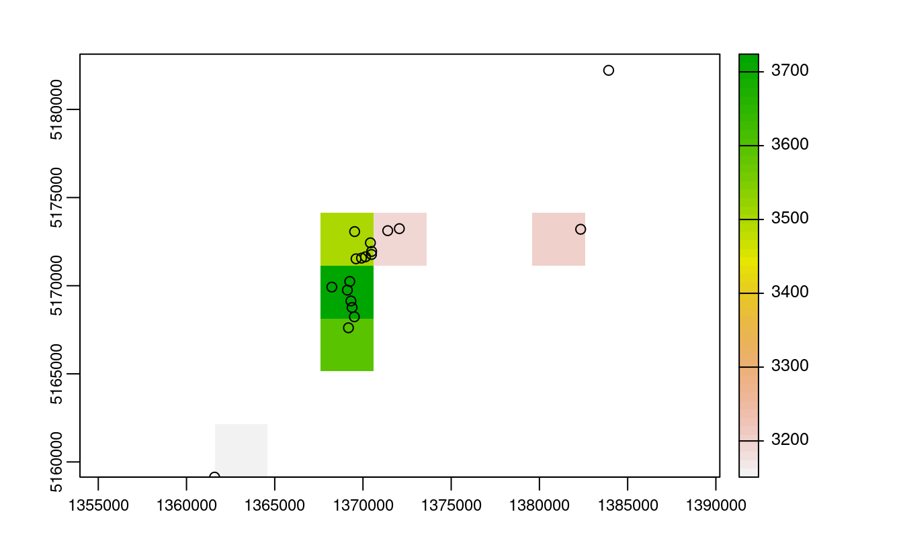
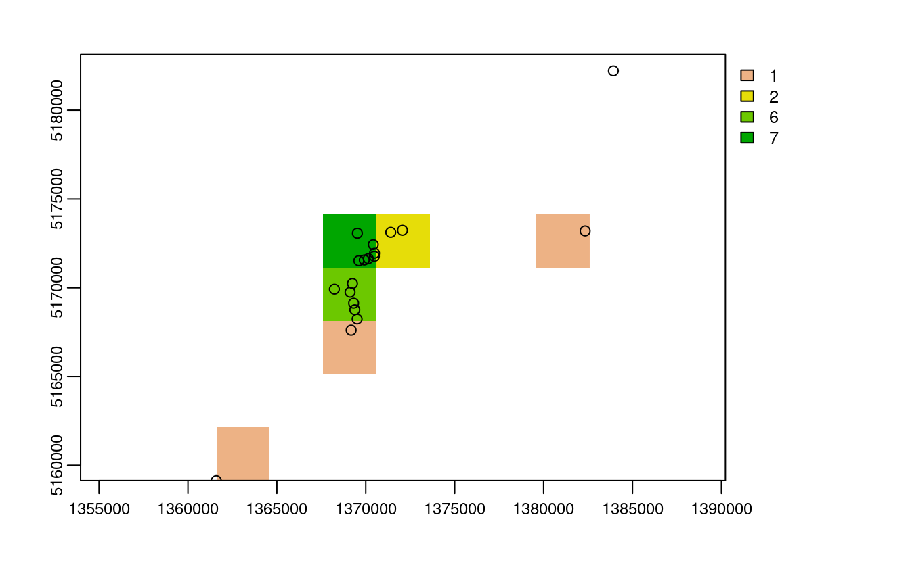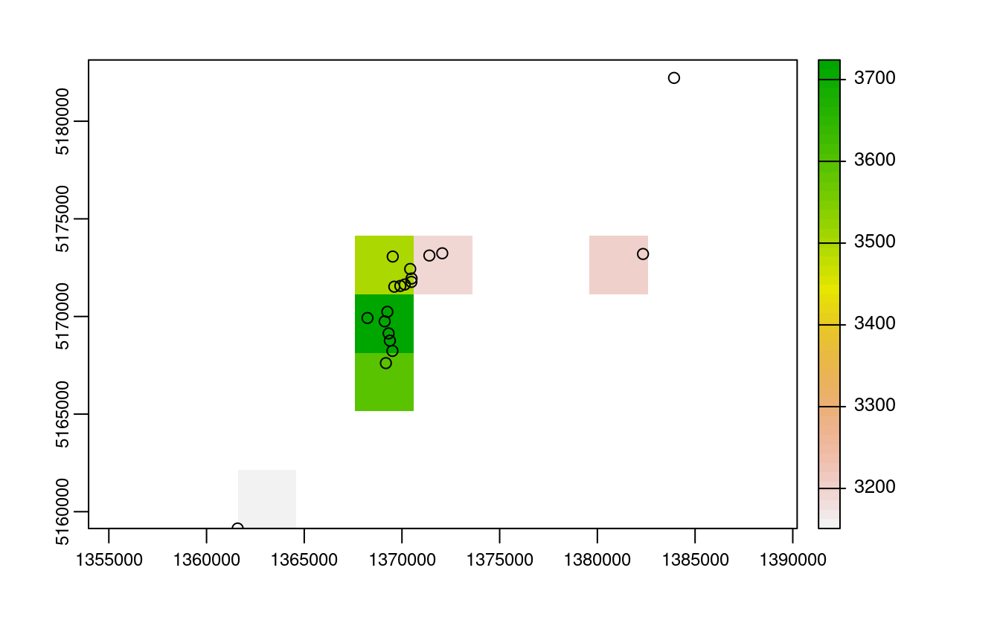
E10. Aggregate the raster counting high points in New Zealand (created in the previous exercise), reduce its geographic resolution by half (so cells are 6 by 6 km) and plot the result.
- Resample the lower resolution raster back to the original resolution of 3 km. How have the results changed?
- Name two advantages and disadvantages of reducing raster resolution.
nz_raster_low = raster::aggregate(nz_raster, fact = 2, fun = sum, na.rm = TRUE)
res(nz_raster_low)
#> [1] 6000 6000
nz_resample = resample(nz_raster_low, nz_raster)
plot(nz_raster_low)
plot(nz_resample) # the results are spread over a greater area and there are border issues
plot(nz_raster)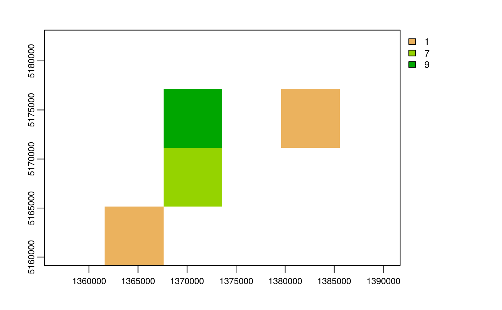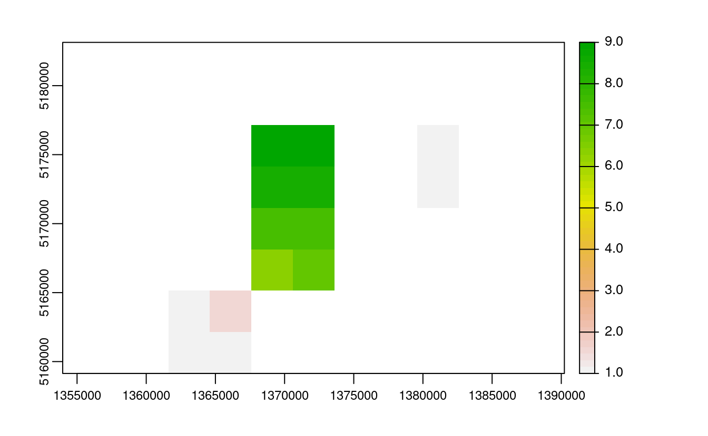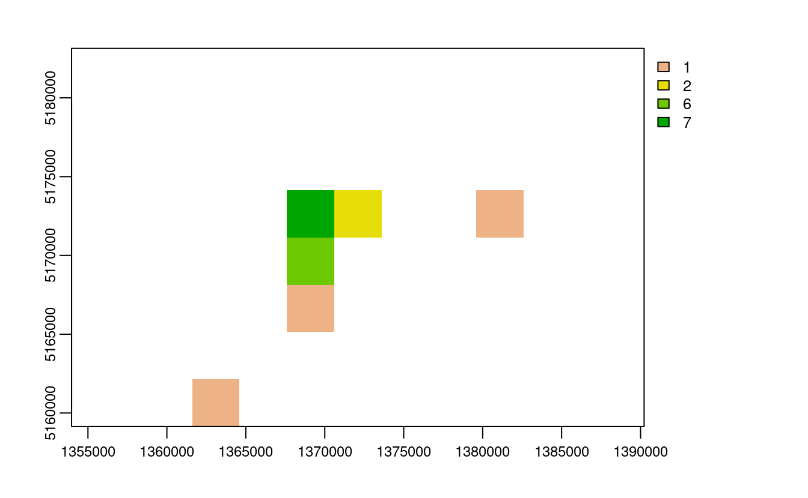
Advantages:
- lower memory use
- faster processing
- good for viz in some cases
Disadvantages:
- removes geographic detail
- adds another processing step
E11. Polygonize the grain dataset and filter all squares representing clay.
grain = rast(system.file("raster/grain.tif", package = "spData"))- Name two advantages and disadvantages of vector data over raster data.
- When would it be useful to convert rasters to vectors in your work?
grain_poly = as.polygons(grain) %>%
st_as_sf()
levels(grain)
#> [[1]]
#> [1] "clay" "silt" "sand"
clay = dplyr::filter(grain_poly, grain == "clay")
plot(clay)
Advantages:
- can be used to subset other vector objects
- can do affine transformations and use sf/dplyr verbs
Disadvantages:
- better consistency
- fast processing on some operations
- functions developed for some domains